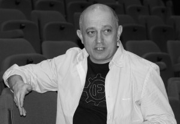
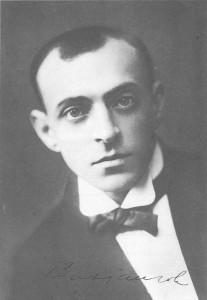

The system of Evgevny Vakhtangov with professor Vladimir Bouchler AVLYST
- Kategori:
- Kurs og workshops
Kurs og workshops
Åpent for profesjonelle skuespillere, dvs. treårig utdanning i skuespillerkunst eller tilsvarende profesjonell erfaring. - Dato:
- 18.01.2014 til 19.01.2014
- Start kl :
- 14:00
- Slutt kl :
- 18:00
- Pris:
- 550,-
- Adresse:
- Norsk Skuespillersenter, Welhavensgate 1, Oslo
 Working on scenes from plays by Anton Tsjekhov, the esteemed director and theatre professor Vladimir Bouchler will guide the participants through the theories of russian theatre legend and favourite pupil of Stanislavskij: Evgevny Vakhtangov.
{kind=link}
The workshop will take place in english. We will send out a scene from a Tsjekhov-play for the participants to prepare beforehand.
About the workshop
The workshop will explore the principles of training according to the Russian theatre director and pedagogue Evgevny Vakhtangov. The workshop will engage the actors in tasks designed to re-awaken imagination and fantasy. This will be an exploration of the actor’s transformation and creation of image and character. A variety of exercises will be
used to develop concentration and public solitude, and improvisation will be used to achieve deeper inner recognition of their characters’ development.
Evgevny Vakhtangov was a Russian actor and theatre director born in 1883. He studied with a group of Moscow Art Theater actors and later joined the theater to study under Stanislavsky and Vladimir Nemirovich-Danchenko.
Vakhtangov was one of Stanislavsky's favorite pupils, and he also became a favourite of Nemirovich-Danchenko's. Stanislavsky said in a letter to Vakhtangov: " I love you for your talent as a teacher, director and actor; for your pursuit of the REAL in art" whilst Nemirovich-Danchenko praised him for "his sublime artistic joy, marvelous achievements & noble courage in solving (...) theatrical challenges".
{kind=link}
Vakhtangov was greatly influenced both by the psychological techniques of his teachers and theatrical experiments of Vsevolod Meyerhold. His most notable production was Turandot by Carlo Gozzi, which has played at the Vakhtangov Theatre ever since 1922.
Critical acclaim
On the Actors Studio webpage, Lee Strasberg is quoted as saying: "Vakhtangov's use of the Method was even more brilliant and more imaginative than Stanislavski’s". The main theater in Vladikavkaz is now named in Vakhtangov's honor, as is the Third Studio of the Moscow Art Theater, now known as The Vakhtangov Theatre.
Read more about Vakhtangov in The Moscow Times and on Wikipedia.
Vladimir Bouchler completed his five-year course of studies based on Stanislavsky, Vakhtangov, Mejerkhold and Mike Chekhov methods at the Shukin School in Moscow in 1990. His academic credentials include Professor of acting in the Drama department of Aberystwith University of Wales; Professor of Acting, Drama Department of Besançon University France; Professor of Acting in the Theatre Conservatory of Bordeaux France; Guest lecturer of Film acting and directing Film Department New University of Lisbon, guest professor director State Art School KHiO Oslo.
His many directing credits include the avant-garde theatre project “H2O and 4 women” in which he worked with Erland Josephson; and as a film director, working with Emma Thompson and Annie Girardot on “Dry Tears”. Since 1991 Vladimir Bouchler works as independent director worldwide: Great Britain, Belgium, France, Germany, Russia, Iceland, Portugal, USA, Holland etc.
Read more about Vladimir Bouchler: http://vladimirbouchler.com/
Pris for medlemmer av NSF: 500,-